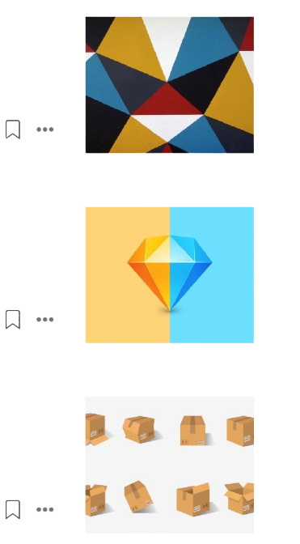

POPULAR ON MEDIUM
Commonly Used Design Patterns in JavaScript
A look at the singleton, iterator, and factory patterns
John Au-Yeung in Better Programming
Feb 24 · 4 min read ★
BASED ON YOUR READING HISTORY
Why Your App Looks Better in Sketch
Exploring rendering differences between Sketch and iOS
Nathan Gitter
Jan 31,2018 · 6 min read
BASED ON YOUR READING HISTORY
JavaScript Bundlers, a Comparison
How do JavaScript bundlers stack up against each other?
Aj Meyghani
Oct 28,2018 · 27 min read ★

Popular on Medium
01
How to Distinguish Between a
Public Safety Crisis and a
Personal Anxiety
Imani Bashir in Forge
Mar 3 · 4 min read ★
02
There's an Epidemic That's a
Bigger Threat Than the
Coronavirus
Dr. David L. Katz in Heated
Feb 29 · 8 min read ★
03
The Flawed, Twisted Legacy of
Jack Welch
Rob Walker in Marker
Mar 3 · 4 min read ★